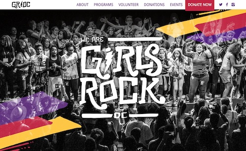
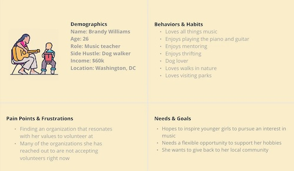
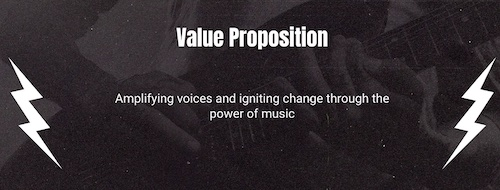
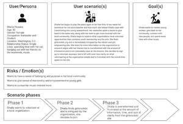
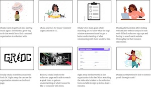
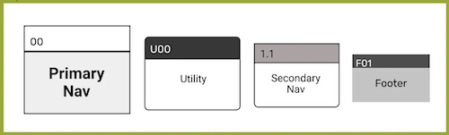

Girls Rock! DC
Overview
Group members: Rachel Bell, Gabriella Boozer, Kasandra Duckett, Maura Jarman
Role: UX/UI Design, Research, Wireframing, Usability Testing, Prototyping
Problem: Despite the invaluable contributions of volunteers to Girls Rock! DC, there exists a gap in the availability of comprehensive and easily accessible information about volunteering with the organization. The lack of detailed information poses a challenge to potential volunteers who are seeking to engage with Girls Rock! DC, hindering their understanding of available roles, expectations, and the volunteer signup process. Proposed Solution: Developing a user-friendly webpage that offers clear and thorough insights into volunteering opportunities and simplifies the signup process is essential to not only enhance the volunteer experience but also to encourage more local residents to actively participate in empowering young girls through Girls Rock DC.

Approach
We used Figma Jam and Miro to brainstorm for this project and Google Drive to organize our research. We organized the project into steps, using Trello to monitor and adhere to timelines. We used Figma to create our wireframes and prototype. We also communicated regularly via Slack and text to ensure we were on target and troubleshoot any bottlenecks in our timeline.
Research
First, we created our proto persona to best understand our assumed user.

In order to redesign this website with the users’ best interests and experience in mind, we performed multiple modes of research, including: Heuristic evaluation of the current site Competitor analysis Stakeholder contact User interviews and survey
Based on these, we identified several areas for improvement: Color scheme and patterns feel overwhelming and lack simplicity Limited volunteer information (could have more text but also video to better understand organization goals and activities) Information architecture is not intuitive at times
Defining Our User: User Persona
Dhalia, a student and bartender in the DMV, is pursuing a Master's in Social Work with a passion for working in schools. Alongside her love for her cat and weekend hangouts with friends, she aims to engage in community involvement and pursue music. Dhalia seeks a volunteer role that intertwines youth mentorship and the arts.
User Insight Statements:
Dahlia aims to engage in volunteer work with an organization that shares her values and passions. This way, she can enhance her sense of community connection, contribute to empowering the upcoming generation, and also rediscover her musical inclinations. Dahlia, a dedicated Master’s student juggling a demanding schedule, is eager to engage in volunteering with an organization aligned with her passions. However, she seeks an opportunity that provides a well-defined understanding of her role, responsibilities, and the time commitment involved.When a professional wants to dedicate their time as a volunteer for a local community non-profit, finding an organization that shares their passions and beliefs becomes pivotal. This mutual alignment allows them to give back to society while also reaping the benefits of community engagement. How can we create a well-defined and concise web page that articulates the value volunteers bring to the table and establishes unambiguous guidelines for potential volunteers?



All of these brainstorming sessions led us into card sorting to develop our sitemap and iterate a new design to create an improved user flow and ease of navigation throughout the site.

We had four user tests (two on desktop, two on mobile) on mid-fidelity prototype after wireframe creation to obtain insights regarding user flow and information architecture. Below are highlighted flags/issues we identified:
Key Takeaways: Some pages felt text heavy Missing breadcrumbs for sign up form (two pages) Some minor prototyping issues (drop down menus, etc.) No separation for optional pathway to email rather than calendar
Key Takeaways: Continued adjustments to streamline and optimize sign up form Added “X” icon for exit pathway for calendar date overlay, allowing for user to correct date or search other dates if needed Added “X” icon for success page rather than delay to empower user Improved image quality and other small UI adjustments
With more time we would love to: Test potential or current site users Get input and feedback from our stakeholders Hone and sharpen our drop-down menu functionality Make the design fully responsive, rather than adaptive